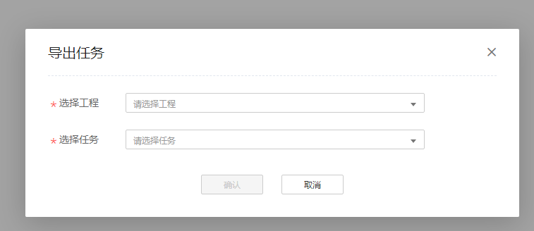

- 点击导出按钮。图1 导出任务

- 选择需要导出的工程和任务。确认后点击确认即可，导出内容参考表1。图2 选择界面
表1 导出内容说明 任务分类
导出内容
全景分析
日志文件，采集的原始数据文件，数据库文件。
进程/线程性能分析
日志文件， 采集的原始数据文件， 数据库文件。
热点函数分析
日志文件，符号文件， 采集的原始数据文件， 数据库文件。
微架构分析
符号文件，采集的原始数据文件，数据库文件。
访存分析-访存统计分析
日志文件， 采集的原始数据文件， 数据库文件， 总览报告文件。
访存分析-Miss事件分析
日志文件，符号文件， 采集的原始数据文件， 数据库文件。
访存分析-伪共享分析
日志文件，符号文件， 采集的原始数据文件， 数据库文件。
I/O分析
采集日志文件，采集的原始数据文件，数据库文件。
资源调度分析
日志文件，采集的原始数据文件，数据库文件。
锁与等待分析
日志文件，符号文件， 采集的原始数据文件， 数据库文件。
HPC分析
日志文件，采集解析的中间文件，数据库文件。